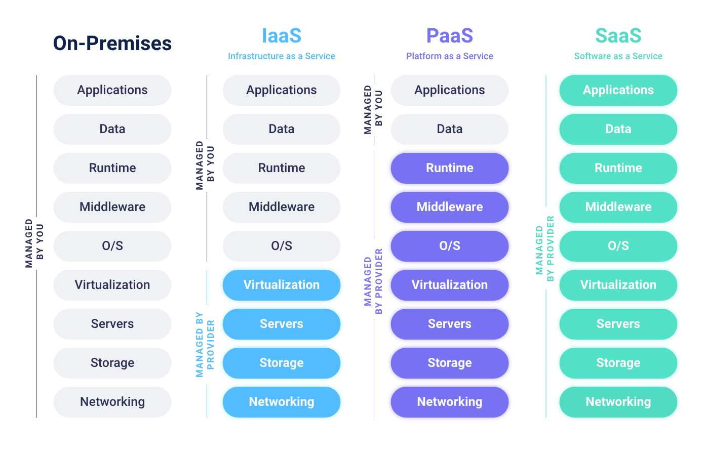

Fundamental Cloud Concepts
Traditional Data Centers
Traditional data centers are collection of servers privately owned and maintained by an organizations.
Following are some of the challenges of using traditional data centres:
- Large upfront investment (CapEx)
- Forecasting demand is difficult
- Slow to deploy new data centers and servers
- Maintaining data centers in expensive
- You own all the security and compliance burden
Advantages of Cloud Computing
- Pay as you go (OpEX)
- Low total cost of ownership (TCO)
- Elastic resources
- Increased speed and agility
- No data center maintenance cost
- Global reach
On using cloud services, although the burden of security is shifted to cloud providers, it is still a shared responsiblity.Read about AWS shared responsibility models here
Elasticity is the ability to acquire resources as you need them and release resources when you no longer need them. In the cloud, you want to do this automatically.
Cloud Computing
“Cloud computing is the on-demand delivery of compute power, database storage, applications, and other IT resources through a cloud services platform via the Internet with pay-as- you-go pricing.”
— Amazon Web Services
Cloud Computing Models
Depending the amount of control you want the users may select one of the following compute models:
- On-Premises: Total control and management of all the resources in traditional data center.
- IaaS: Total control and management of all resources in the cloud.
- PaaS: Pre-defines network, storage, OS, and runtime, to allow developers to focus on development tasks.
- SaaS: No control over any layers, they are just meant to be used by end-users.

Cloud Deployment Models
Based on the customer requirements, one of the following three cloud deployment models are used.